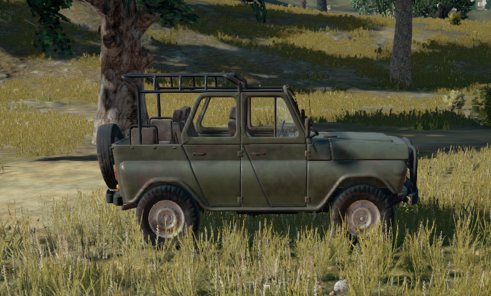
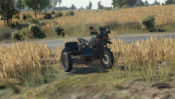
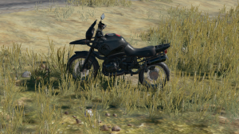
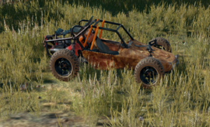
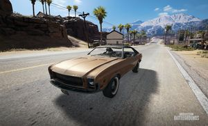
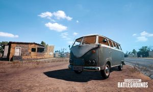
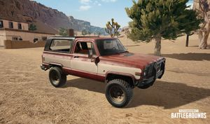
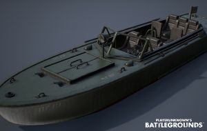
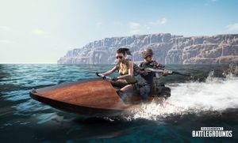

Dacia 1300
- Passasjerer: 4
- Liv: 1820
- Fart: 139 km/h
- Type: Land
Dacia er en kommunistisk bil og er mye brukt på Top Gear.
les mer

UAZ
- Passasjerer: 4
- Liv: 1820
- Fart: 130 km/h
- Type: Land/offroad
UAZ er et kjøretøy som egner seg godt for beskyttelse.
les mer

Motorsykkel med sidevogn
- Passasjerer: 3
- Liv: 1025
- Fart: 130 km/h
- Type: Land
Veldig farlig å kjøre, anbefales ikke.
les mer

Motorsykkel
- Passasjerer: 2
- Liv: 1025
- Fart: 152 km/h
- Type: Land
Veldig rask, men risikabelt å kjøre med. PS! Pass opp for terreng.
les mer

Buggy
- Passasjerer: 2
- Liv: 1540
- Fart: 100 km/h
- Type: Land/offroad
Lav drivstofforbruk, og godt egnet for terreng.
les mer

Mirado
- Passasjerer: 4
- Liv: N/A
- Fart: 152 km/h
- Type: Land
Veldig rask, bruker mye drivstoff og tåler ikke mye.
les mer

Van
- Passasjerer: 6
- Liv: N/A
- Fart: N/A
- Type: Land
Veldig treg, og fungerer bedre med 3 hjul.
les mer

Pickup
- Passasjerer: 4
- Liv: N/A
- Fart: 72 km/h
- Type: Land
Fungerer greit som fremkomsmiddel, men er litt treg.
les mer

Pg 117
- Passasjerer: 5
- Liv: 1520
- Fart: 90 km/h
- Type: Vann
Brukes ikke ofte. Er treg og bruker mye drivstoff.
les mer

Vannscooter
- Passasjerer: 2
- Liv: N/A
- Fart: 90 km/h
- Type: Vann
Lettere å styre enn en båt.
les mer